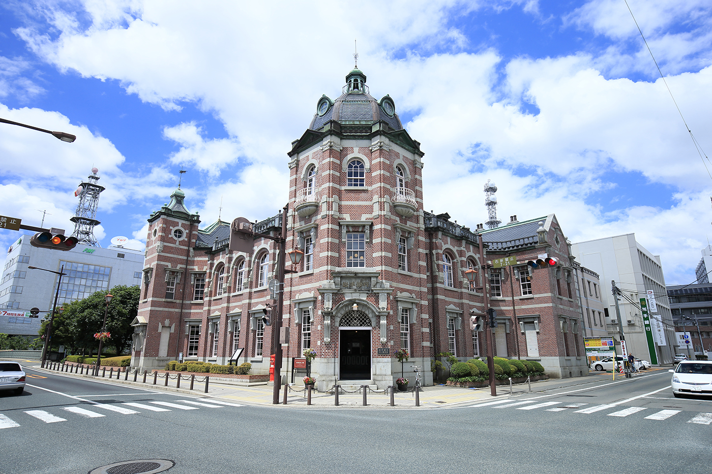

岩手銀行赤レンガ館は、岩手県盛岡市中ノ橋通にある歴史的な建物です。 正式名称は「岩手銀行（旧盛岡銀行）旧本店本館」で、国の重要文化財に指定されています。
この建物は1911年（明治44年）に、旧盛岡銀行の本店行舎として完成しました。 長い歴史を持つ建物で、1984年（昭和59年）に岩手銀行の本店が新しい建物へ移転した後は、 中ノ橋支店として利用されました。その後、2012年（平成24年）に銀行としての営業を終了しました。
営業終了後には約3年半にわたる保存修理工事が行われ、2016年（平成28年）から 「岩手銀行赤レンガ館」として一般公開されています。 現在では、盛岡市の歴史を伝える重要な建物の一つとして、多くの人に親しまれています。